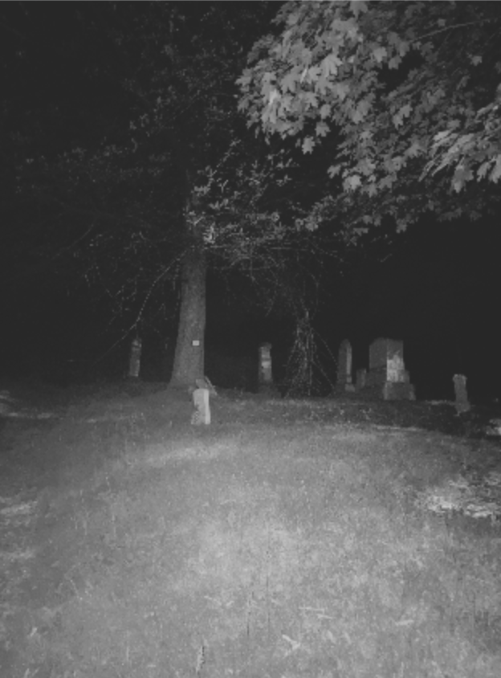
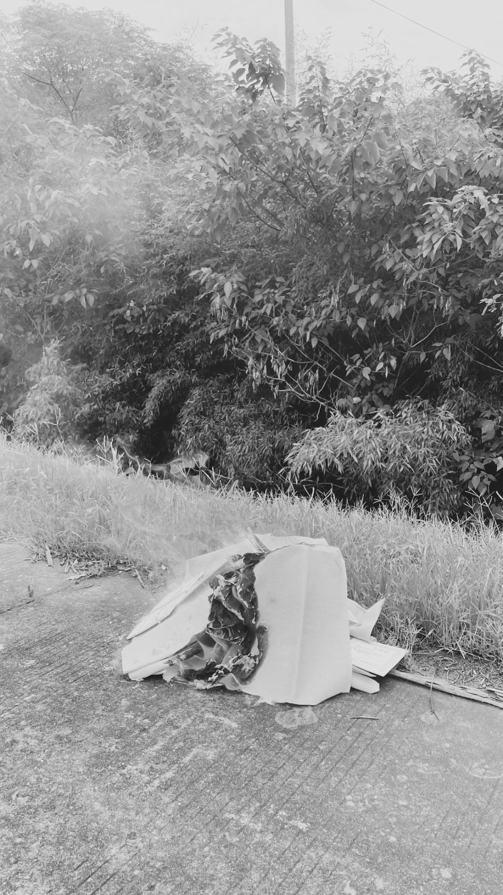
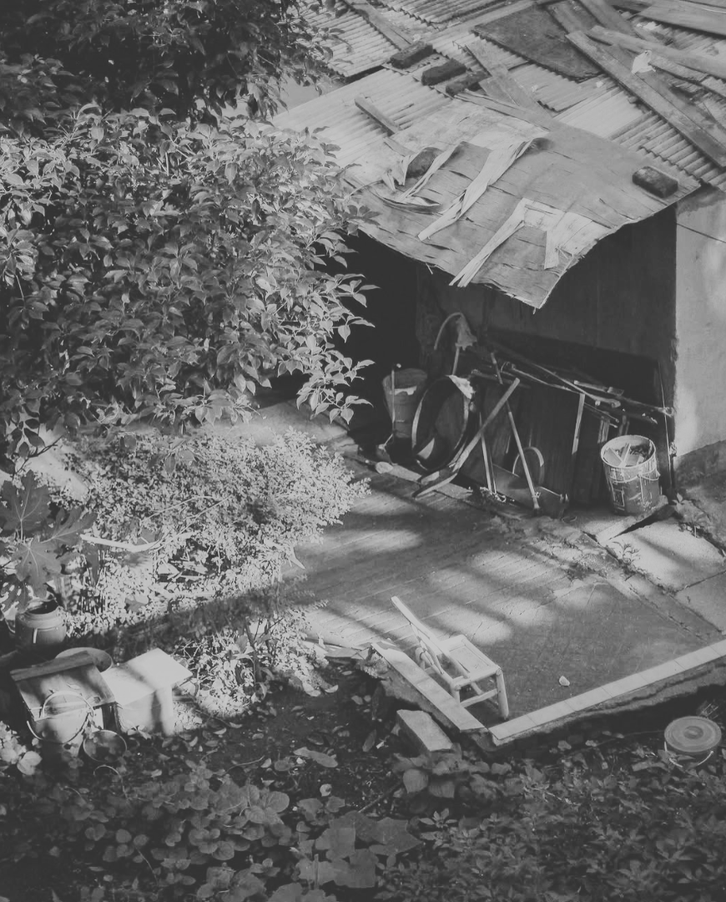
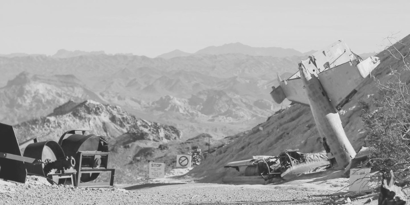
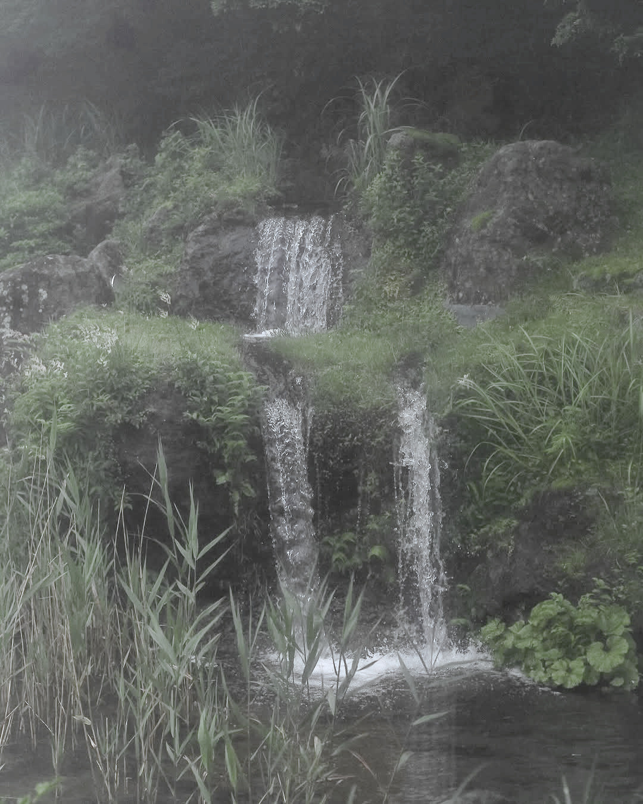
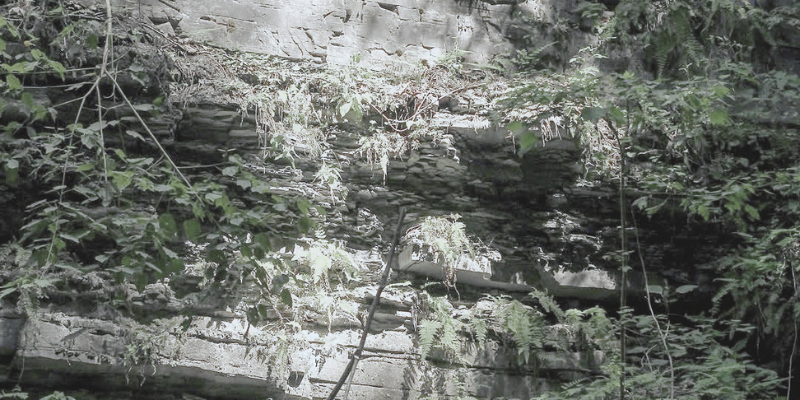
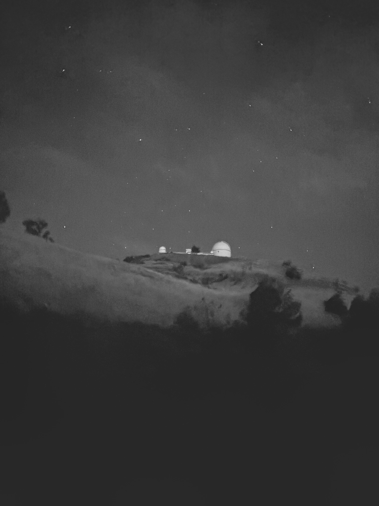

EPITAPH
I went to and learned there, surrounded by headstones, that language is everything. So let me lie here and fold into the litany of a dying verse. The sentence a saber, ink spilling from the seams, suddenly I am gagging on a tongue that can no longer embody intent. The thing is, I have always wanted to assign epitaph to form. The place of knowing long gone, I held myself in the vestigial spine of a letter, but the words unspooled like moths — the night multiplies — a shiver cedes to entropy. I tried to pin them down, but my blade was as needle-thin as the rib-bone of a fish — useless. One by one they emerged from dust, slipping away from me, toward some other .

根 / ROOTS
let me trace a line from armpit to elbow,
the open nerve of this blue porcelain
dusting in the armory of our lineage.
we should have never sold the old
house — i find a meager
repentance. those ghosts were
starved, and now we've made them
homeless. left the facade degraded,
silks bleached out in an inkpot of sun.
i think my touch here is unwanted —
memories are not to be festooned
like chunlian. the shrine abhors
betrayal and the prayers i know
are catholic, so i comply when i
am asked not to . but once
i tried it for myself in my bedroom,
touched my brow to polypropylene.
here i was reminded that is
a homonym — our home, our family,
our household. here i can feel the
weight of what i am ending.
金紙 joss paper, spirit money

家 something you had.

121.500 MHZ
mary never reads safety manuals anymore — that was a thing of long-exalted doubt. a scar knots around her knuckle from the very first time she opened one and the edge caught her thumb, a distraction in this place, a memo for some impossible latency. now she watches more videos than ever, searching for oxygen in the gaps of what she finds. a mask swings overhead, becoming with every rotation a carousel, a candy apple, a crown of cempasúchil. and we are weightless! fire flares across fiberglass — firecrackers pop under her touch. beyond the turbulence, behind her eyes, there are reflections upon reflections in a double-glass window. it is so light she can hardly breathe. so light she thinks they're going the wrong way the whole time, convinced she will always know true north from animal instinct alone. but she's never felt so bottomless in her stomach either, so sick she had to turn it over, and so she thinks, well, maybe this is all we are anyway, really. now she's gaining momentum by the thousands, pacified by the knowledge that in time there might be poems and elegies and a hug of lilies around a little pear-shaped urn. but in retrospect, she sees only light — surging infinites, infinitesimal to all else. the sky burns where it splits, and nothing in the space between.
121.500 MHz the frequency used for
distress communications from civilian aircraft

IGUAZÚ
on the bridge back to
you told me about asgard. your face
then was hollowed but moon-soft,
rounded by the gemstones you once
held tight-knuckled, slumped face-down
at my bedside. i prefer to be haunted
by this — a vision of you, whole. here,
you might just be immortal, papá.
but my latest dream of drowning
ends with your milk-blue eyes:
you were formless — more savior
than father. pa, you were not good
but you left me with this, your body,
a dagger, something to cut loose ends,
the navel string to which i owe penance
still. good men do not forget. so i
venerate you in the slip of and
the lives you traded for mine, in the
shape of mamá sinking into the
sand. god, i remember the night we
put her under, and you said to me
nothing could hurt me now. you were
wrong, pa, but i think now, under
the rural , i hear the siren calls of
cicadas, and they bring me closer to
forgiving.
from nuestra parte de noche by mariana enriquez



SLASH & BURN
i don't mean to have a self-immolation complex in a first world country. no attempt at self-awareness splits my self from the machine. that's how we were raised — little army boys, singing battle hymns at school, bleeding tie-dye onto stars-and-stripes shirts. i don't mean to have a self-immolation complex without ever having seen a flag burn. that's the kind of shit they used to kill for in the south, but i guess legality complicates the whole matter. civil disobedience only strikes bulls-eye when it crosses a line. have i ever disobeyed? i guess i'm the ultimate voyeur. aren't we all? i've seen burning men everywhere. tibet, soviet russia, the arab spring, mohamed bouazizi to aaron bushnell, what it takes to look down a barrel and dream of something beyond yourself. i have hunger because i am given enough to eat. it has to go somewhere. i know i am ending it here, as good as or "burning clothes" as they say in spanish, after the deflagration of the gunpowder against your shirt, the burn hole from a going all the way through. i'm over smoking, i think. i mean, it can't be suicide if you still want to live, and by god i'm not yet done. but i am ending it here, because i've been lost since i was thirteen. you know, my heart is on , and i don't think it's going to go out. so this is all there is: a reminder, an acceptance. i swear to god, this is all there is. if i'm still here tomorrow, give me another choice. give me another lighter. i'll do it differently, this time, i swear. cross my heart — this time i'll do it better.
point-blank from pointé à blanc,
possibly the white center of a target, empty space, or zero
elevation on a gun sight.
quemarropa / queima-roupa in spanish
/ portuguese